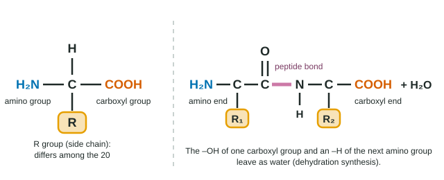
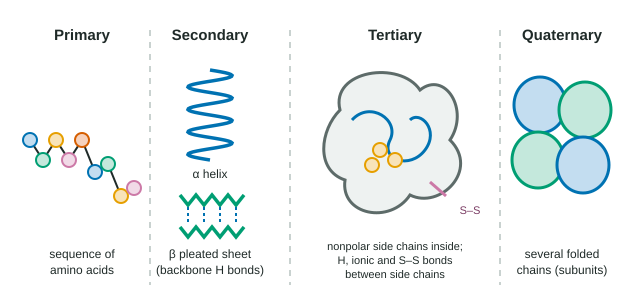

Proteins do most of the work in a cell: they speed up reactions, carry oxygen, contract muscles, hold tissues together and pass signals. Every one is a chain of amino acids, and every one works because of its shape. This page follows a protein from its sequence to its final shape, and shows what happens when either changes.
Amino acids and their R groups
Every amino acid has the same core: a central carbon bonded to an amino group (–NH2), a carboxyl group (–COOH), a hydrogen atom, and a fourth group that differs from one amino acid to the next: the R group, or side chain (Figure 1). Cells use 20 different amino acids, and their R groups fall into a few chemical families:
| Kind of side chain | Examples | Behavior in water |
|---|---|---|
| Nonpolar | Leucine, valine, alanine | Hydrophobic: tend to be buried inside a folded protein |
| Polar, uncharged | Serine, cysteine | Hydrophilic: hydrogen-bond with water or other side chains |
| Charged, acidic (−) | Aspartic acid, glutamic acid | Hydrophilic: carry a negative charge at cell pH |
| Charged, basic (+) | Lysine, arginine | Hydrophilic: carry a positive charge at cell pH |

Peptide bonds and polypeptides
Amino acids join by dehydration synthesis: the carboxyl group of one reacts with the amino group of the next, releasing a water molecule and forming a peptide bond (C–N). A chain of amino acids is a polypeptide. It has a direction: one end has a free amino group (the amino end, or N-terminus) and the other a free carboxyl group (the carboxyl end, or C-terminus). A protein is one or more polypeptides folded into a working shape.
Four levels of structure
A protein's shape is described at four levels (Figure 2).

- Primary structure: the sequence of amino acids, held by peptide bonds. It is set by the gene for that protein.
- Secondary structure: regions of the chain that coil into an α helix or lie back and forth in a β pleated sheet. Both are held by hydrogen bonds between backbone atoms: the C=O of one amino acid and the N–H of another a few positions along. Side chains are not involved.
- Tertiary structure: the overall three-dimensional shape of one polypeptide, produced by interactions between R groups:
- Hydrophobic interactions: nonpolar side chains crowd together in the protein's core, away from water (the same effect that makes oil form drops).
- Hydrogen bonds between polar side chains.
- Ionic bonds between positive and negative side chains.
- Disulfide bridges: covalent S–S bonds between the sulfhydryl groups of two cysteines, which lock parts of the chain together.
- Quaternary structure: two or more folded polypeptides, called subunits, joined into one functional protein. Hemoglobin has four.
| Level | What it is | Held by |
|---|---|---|
| Primary | Amino acid sequence | Peptide bonds (covalent) |
| Secondary | α helices, β pleated sheets | Hydrogen bonds between backbone C=O and N–H |
| Tertiary | 3-D shape of one chain | R-group interactions: hydrophobic, hydrogen, ionic, disulfide |
| Quaternary | Several chains together | The same kinds of R-group interactions, between chains |
Sequence determines shape determines function
A polypeptide folds by itself, largely because of its sequence: each R group settles where its chemistry fits. In a test tube, many small proteins that have been completely unfolded fold back into their working shape once the conditions return to normal, with no help: all the information needed for the shape is in the sequence. Inside cells, chaperone proteins help many chains fold correctly and keep half-folded chains from clumping together.
Because shape depends on sequence, changing one amino acid can change the shape. How much depends on where the change is and how different the new R group is:
Worked example: predicting the effect of a swap. In a folded protein, leucine (nonpolar) at a position buried in the core is replaced, in three different versions of the protein, by isoleucine (nonpolar), serine (polar) or aspartic acid (negatively charged). Rank them from least to most disruptive.
Isoleucine is nonpolar like leucine and fits the hydrophobic core: least disruptive. Serine is polar, so it fits the water-free core poorly: moderate. Aspartic acid carries a charge, which is very unstable buried away from water, so the chain will tend to refold with that region exposed: most disruptive. A similar change on the protein's surface, where water surrounds it, usually matters much less.
The sickle cell disorder is the classic case. Replacing glutamic acid (charged) with valine (nonpolar) at position 6 of one hemoglobin chain puts a sticky nonpolar patch on the molecule's surface. When oxygen is low, that patch binds to a nonpolar pocket on a neighboring hemoglobin, and the molecules stack into long fibers.
Denaturation
A protein's shape also depends on its surroundings. High temperature, a pH far from normal, or some chemicals (such as urea or detergents) can break the hydrogen bonds, ionic bonds and hydrophobic interactions that hold the shape. The protein unfolds, or denatures, and stops working. Its peptide bonds are not broken, so its primary structure survives. Some denatured proteins refold when conditions return to normal; others, like cooked egg white, tangle with each other and stay denatured.
What proteins do
Different shapes suit different jobs. Enzymes speed up reactions. Structural proteins such as collagen (in skin, tendons and bone) and keratin (hair, nails) are long and fibrous. Hemoglobin carries oxygen. Motor proteins move things inside cells and contract muscles. Others carry signals, defend against disease or move substances in and out of cells, all through their shapes.